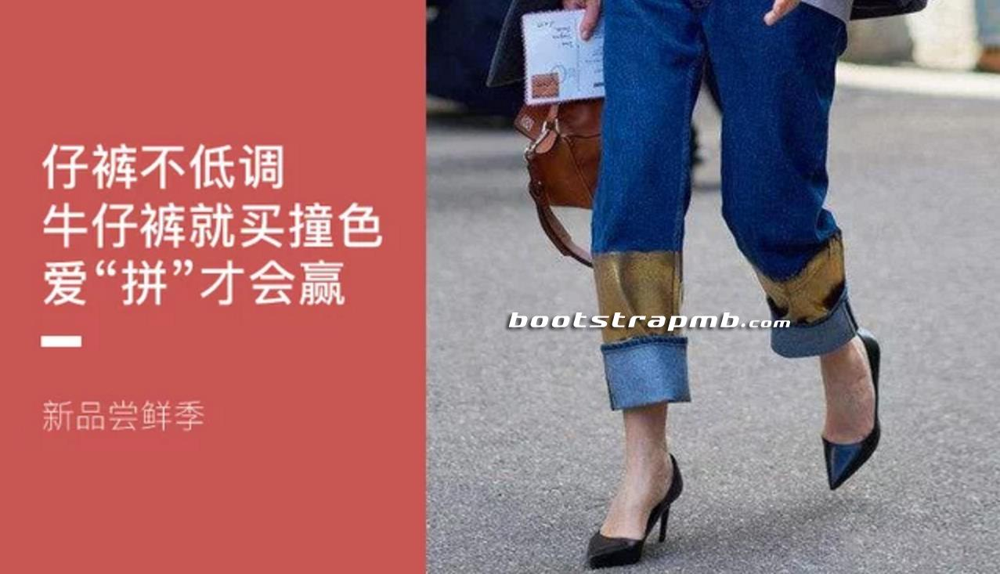

高腰裤
高腰裤，这个起源于上世纪六七十年代的流行单品，现在看来一定是一个伟大的设计，它可以很好地提升腰节线，拉长身材比例，同时勾勒出修长的双腿，A4腰和筷子腿统统都可以交给它。
Posted on January 18, 2016
高腰裤，这个起源于上世纪六七十年代的流行单品，现在看来一定是一个伟大的设计，它可以很好地提升腰节线，拉长身材比例，同时勾勒出修长的双腿，A4腰和筷子腿统统都可以交给它。

张宇佳哥哥
发表于 2016-06-30 15:30

徐萌小小
发表于 2016-06-30 15:30